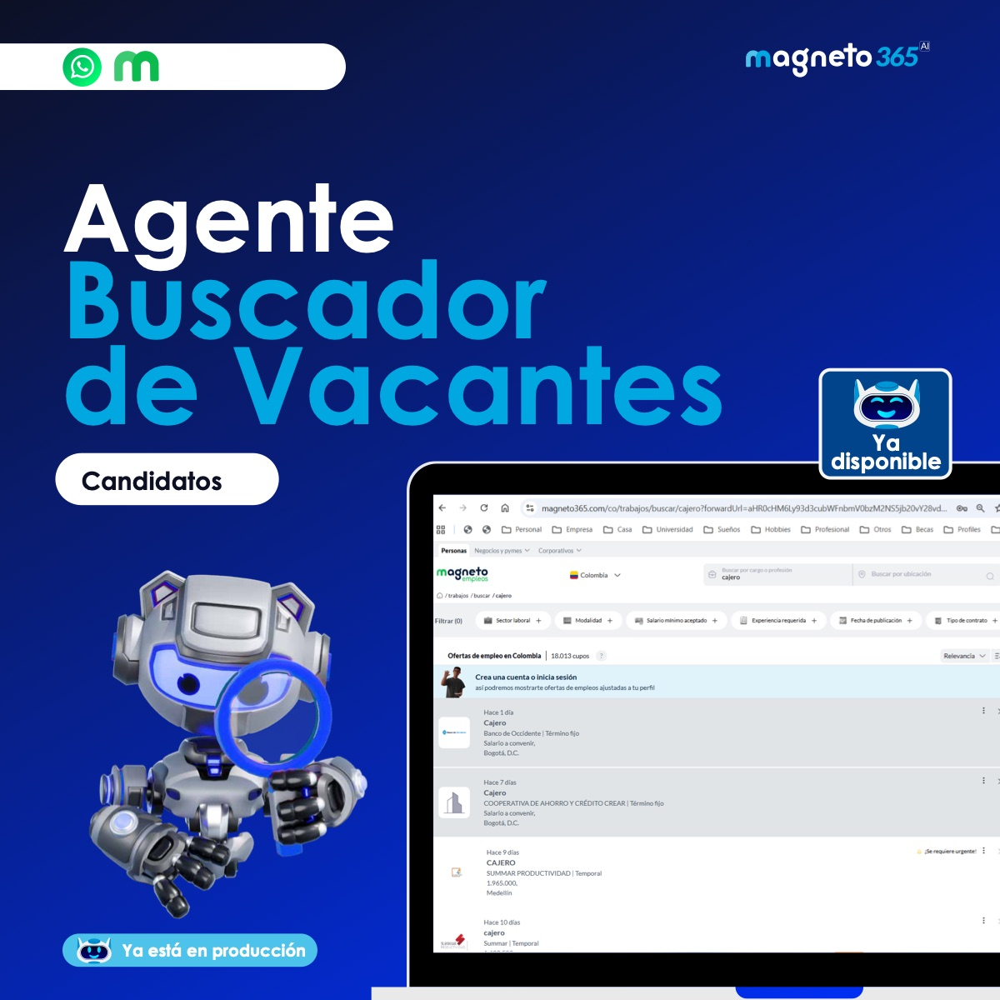
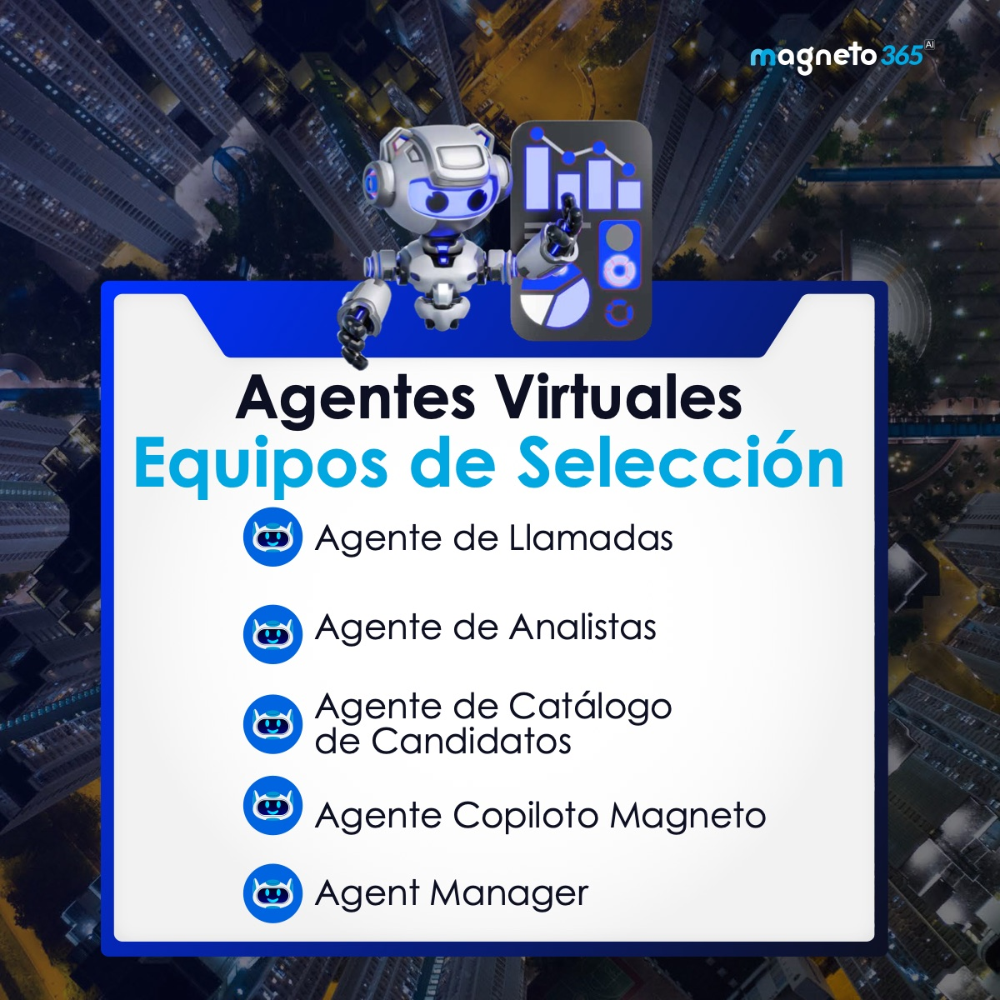
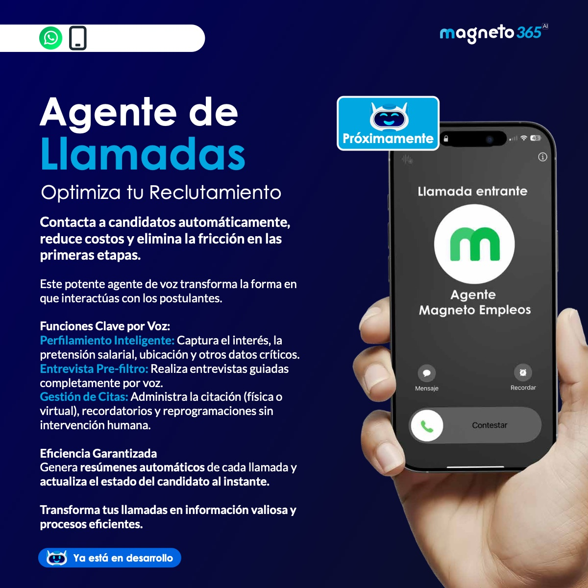
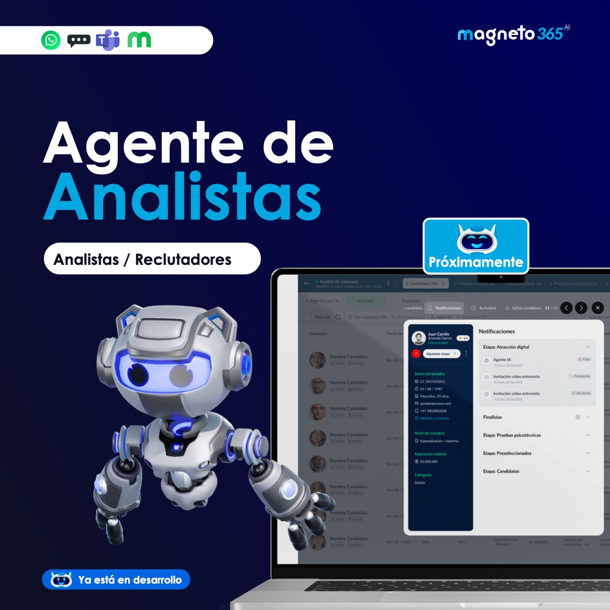
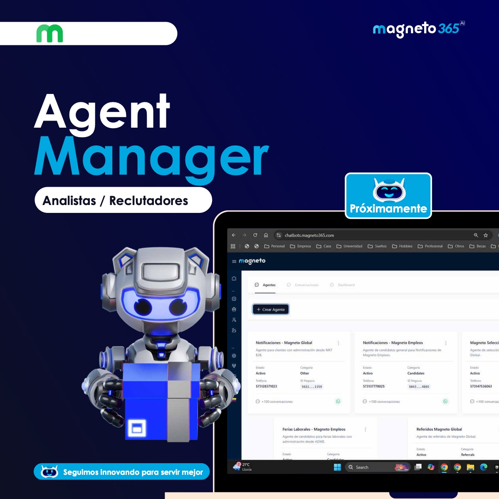

Un sello de estado
Disponible o próximamente: el comprador sabe al instante qué puede usar hoy.
Una presentación de 21 láminas para explicar once agentes de IA, desde el que atiende candidatos por WhatsApp hasta el que administra todo el ecosistema. El reto era hacer comprensible un producto técnico y en plena evolución.

Cada agente tiene su lámina con la misma estructura: nombre, a quién sirve, el agente en acción sobre un dispositivo real y un sello de estado ("Ya disponible", "Próximamente"). El robot 3D, que también diseñé, acompaña todas las láminas y le da continuidad a un tema abstracto.





Disponible o próximamente: el comprador sabe al instante qué puede usar hoy.
Cada agente aparece en WhatsApp, en una llamada o en el panel, donde realmente trabaja.
El robot une once productos distintos en una sola familia.